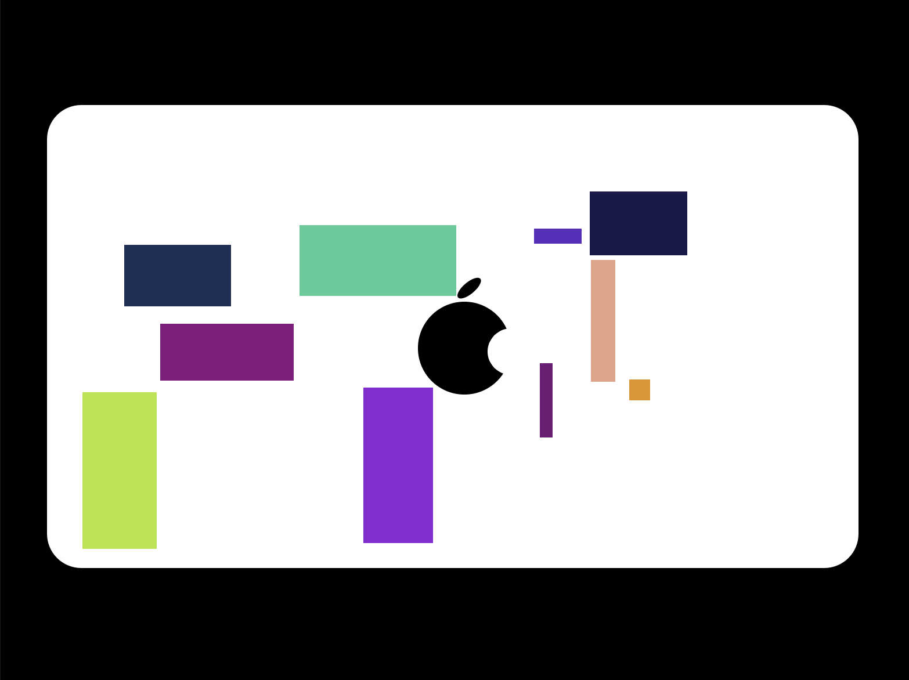
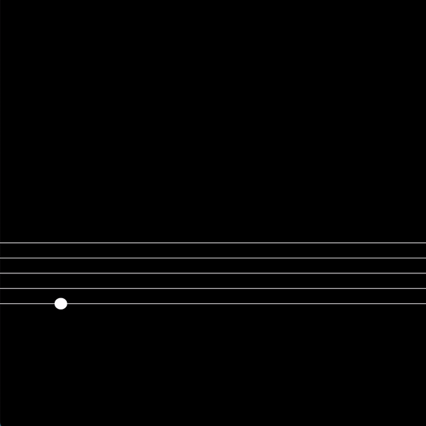
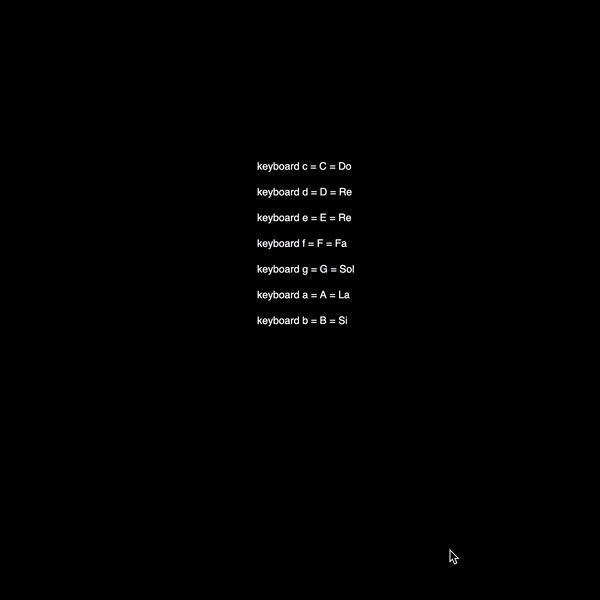
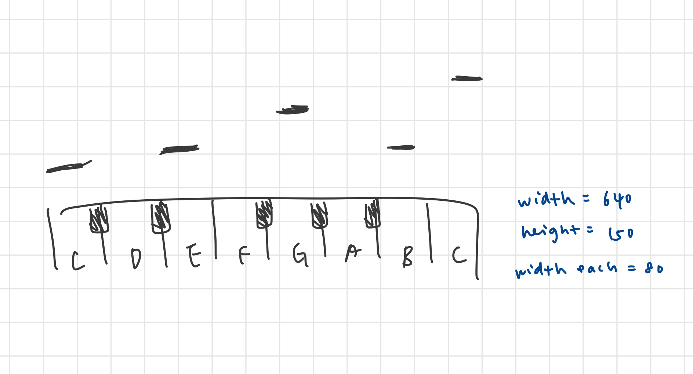

MP2 Writeup
Overview and Usage
In this assignment, I made a gallery of artworks made by the P5.js library. There are six kinds of artworks, and each of them utilized different functions in the P5.js library.
The six artworks are:
- Static
- Random
- Infinity
- Interactive
- Audio
- Audio and Visuals

Development Process
Part 1: Static
I started by making the first part of this assignment -- static artwork. I first searched online and looked into the P5.js Reference to find some examples as my inspirations. The shapes in the P5.js Reference Page reminded me of a HCDE sticker design. So, I decided to use shapes to make an easy version of the sticker.

Part 2: Random
Next is the second part -- random artwork. I got my inspiration from my laptop which had many stickers on it. So, I decided to make an artwork that generated random "stickers" (rectangles) on a laptop.
Part 3: Infinity
For my third artwork, Infinity, I decided to make a circle that moved in an infinity sign shape consistently. This idea is inspired by the name of this part. I also found some useful examples online while working on this part. These resources helped me a lot in figuring out the math equation for the infinity sign.
Math equation for a infinity sign: (cost, sintcost) -pi/2 <= t <= 3pi/2

Part 4: Interative
Next is the interactive part. My inspiration for this part originated from the P5.js Reference and Library. There were many examples of music. Plus, I am really interested in making something related to music on a computer. So, I thought it would be interesting if the artwork showed the music note based on the user's input.
Part 5: Audio
After making the interactive part, I wanted to work on playing the sound of the music note based on the user input. So, I used the Oscillator object to play the sound of the note the user inputted. The Oscillator required the frequency of the music note as a parameter, so I searched for the frequency of each note by using this website and added it in the code.
Part 6: Audio + Visuals
The final part of this assignment was to combine audio and visuals based on the user input. This was pretty challenging for me since the coding process was long and required a lot of planning before I actually started to code. I decided to make a digital piano that took user input and played the musical note with some visuals. Before starting coding, I sketched out what I imagined in my mind. This step helped me to break down the process and reduced the workload in my mind.
My idea for this artwork was that the user could type on their computer keyboard to play the digital piano. While the user was playing it, the rectangle located above the piano would move up every time the user hit the corresponding key.
After sketching, I started to work on the code. First, I made the piano on the canvas. Next, I put the name of the notes on the piano. Having the visuals, I then used what I did for part 5 for the audio output. So when the user typed the key A on their keyboard, a C music note would be output. And finally, I added a variable that kept the number of times the key was hit. The rectangle above the key would move up when the user pressed the key.

Logic Error: Oscillator Audio
While making Oscillator in part 5, I ran into some issues with the sound quality. When I pressed a key on my keyboard, the audio output was pretty bad. It had two sounds: the musical note based on the user input sound and low-frequency noise. Although it outputted the correct note, I did not satisfy with the low-frequency noise.
To solve this problem, I searched online for many examples to figure out what caused this problem. I realized that I put osc.start() in the setup() function, which was the reason why the noise was coming out. So, I moved the osc.start() to another function to trigger it after the key was pressed.
Ideas and Future
An idea that I think would be cool and special is making some more animation on my sixth artwork. It would be cool if the rectangles' lengths could be different based on the time length of the user's input.